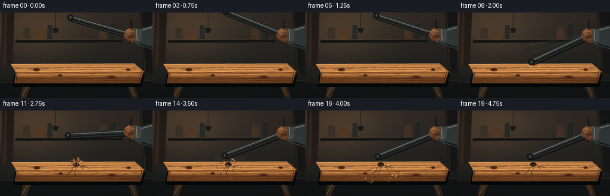
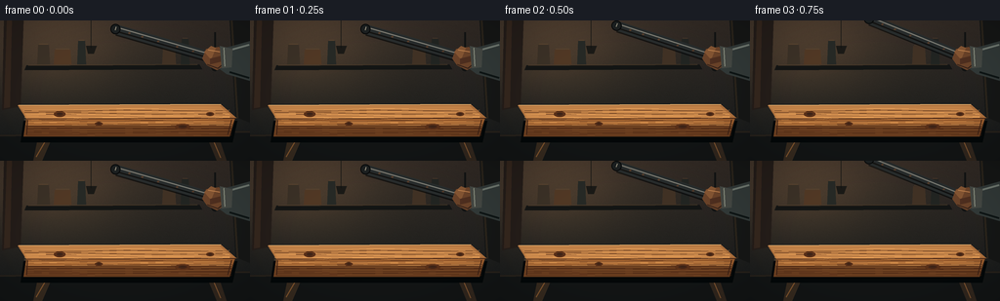
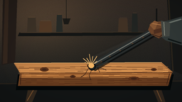
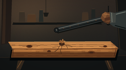
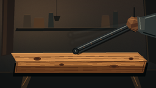

CODING AGENTS AS PIXEL WORLD MODELS
traex/GPT-5.6-Sol · material_0015
点击播放 · 原生 RGB 像素
逐轮保存的候选
回放视频、检查图与代码变化。
每份候选均可单独播放。实际图片检查记录在下方工具轨迹中。
候选 01播放与检查图
点击播放 · 原生 RGB 像素

展开代码变化
--- 上一保存版本
+++ 本次保存版本
@@ -0,0 +1,248 @@
+from pathlib import Path
+import math
+import numpy as np
+from PIL import Image, ImageDraw, ImageFilter
+import artifact_io
+
+W,H,N = 256,144,20
+S=4
+rng=np.random.default_rng(1847)
+
+# Stable handcrafted texture data
+wood_grain=[]
+for j in range(19):
+ y=91+j*1.45+rng.uniform(-.6,.6)
+ phase=rng.uniform(0,6.28); amp=rng.uniform(.25,1.1); period=rng.uniform(16,38)
+ wood_grain.append((y,phase,amp,period,rng.integers(0,2)))
+knots=[(61,96,6,3),(187,109,8,3),(101,106,4,2),(215,96,4,2)]
+# fixed splinter launch data: angle, speed, size, rotation
+splinters=[]
+for k in range(31):
+ a=rng.uniform(math.radians(195), math.radians(345))
+ # bias mostly upward from impact
+ if k<22: a=rng.uniform(math.radians(205), math.radians(335))
+ speed=rng.uniform(8,25)
+ splinters.append((a,speed,rng.uniform(1.0,3.5),rng.uniform(-1,1),rng.uniform(.55,1.0)))
+
+def sc(v): return int(round(v*S))
+def pts(seq, ox=0, oy=0): return [(sc(x+ox),sc(y+oy)) for x,y in seq]
+def line(draw, seq, fill, width=1, ox=0, oy=0): draw.line(pts(seq,ox,oy),fill=fill,width=max(1,sc(width)),joint='curve')
+def ellipse(draw, box, fill, outline=None, width=1, ox=0, oy=0):
+ x0,y0,x1,y1=box; draw.ellipse((sc(x0+ox),sc(y0+oy),sc(x1+ox),sc(y1+oy)),fill=fill,outline=outline,width=max(1,sc(width)))
+def polygon(draw, seq, fill, ox=0, oy=0): draw.polygon(pts(seq,ox,oy),fill=fill)
+
+def make_background():
+ # cinematic warm workshop wall gradient and subtle film-like texture
+ yy,xx=np.mgrid[0:H*S,0:W*S]
+ top=np.array([49,43,39.],float); bot=np.array([20,25,27.],float)
+ t=(yy/(H*S-1))[...,None]
+ arr=top*(1-t)+bot*t
+ glow=np.exp(-(((xx/S-55)/82)**2+((yy/S-25)/58)**2))*30
+ arr += glow[...,None]*np.array([1.0,.70,.38])
+ noise=rng.normal(0,1.7,(H*S,W*S,1))
+ arr=np.clip(arr+noise,0,255).astype(np.uint8)
+ im=Image.fromarray(arr,'RGB')
+ d=ImageDraw.Draw(im,'RGBA')
+ # wall timber uprights
+ polygon(d,[(4,0),(24,0),(21,88),(2,92)],(35,29,26,255))
+ polygon(d,[(7,0),(12,0),(10,89),(4,90)],(92,67,44,70))
+ polygon(d,[(235,0),(256,0),(256,105),(241,99)],(21,23,23,255))
+ line(d,[(237,0),(243,100)],(104,77,48,65),2)
+ # shelf, planks and indistinct workshop objects
+ polygon(d,[(27,46),(204,45),(207,50),(25,51)],(19,21,21,255))
+ line(d,[(29,46),(202,45)],(121,91,58,100),1)
+ for x,w,h,c in [(38,13,20,(57,49,40,255)),(55,18,15,(78,56,38,255)),(79,9,24,(37,41,39,255)),(166,14,19,(62,49,38,255)),(185,9,26,(32,36,35,255))]:
+ polygon(d,[(x,45),(x+w,45),(x+w-1,45-h),(x+1,45-h)],c)
+ line(d,[(x+2,44-h),(x+w-2,44-h)],(161,113,62,35),1)
+ # hanging tool silhouettes
+ line(d,[(220,12),(220,45)],(12,16,17,210),2)
+ ellipse(d,(216,42,224,52),(14,17,18,220))
+ line(d,[(93,0),(93,28)],(15,18,18,160),1)
+ polygon(d,[(88,26),(99,26),(96,34),(90,34)],(15,17,17,200))
+ # distant bench edge
+ polygon(d,[(0,117),(256,113),(256,144),(0,144)],(18,21,22,255))
+ line(d,[(0,118),(256,114)],(92,70,48,70),2)
+ return im
+
+BACKGROUND=make_background()
+
+def rod_geometry(angle_deg, grip=(220,39), L=106, width=10):
+ a=math.radians(angle_deg); gx,gy=grip
+ tx=gx+L*math.cos(a); ty=gy+L*math.sin(a)
+ vx=tx-gx; vy=ty-gy; mag=math.hypot(vx,vy)
+ nx=-vy/mag*width/2; ny=vx/mag*width/2
+ poly=[(gx+nx,gy+ny),(tx+nx,ty+ny),(tx-nx,ty-ny),(gx-nx,gy-ny)]
+ return (tx,ty),poly,(nx,ny)
+
+def draw_rod(layer, angle, grip, alpha=255, blur=False):
+ d=ImageDraw.Draw(layer,'RGBA')
+ tip,poly,(nx,ny)=rod_geometry(angle,grip)
+ # dark cast edge then steel body
+ polygon(d,[(x+1.4,y+2) for x,y in poly],(3,6,7,int(alpha*.62)))
+ polygon(d,poly,(38,44,46,alpha))
+ # cool cylindrical light stripe and worn warm reflection
+ gx,gy=grip; tx,ty=tip
+ line(d,[(gx+nx*.42,gy+ny*.42),(tx+nx*.42,ty+ny*.42)],(147,154,150,int(alpha*.72)),1.25)
+ line(d,[(gx-nx*.42,gy-ny*.42),(tx-nx*.42,ty-ny*.42)],(7,10,11,int(alpha*.75)),1.4)
+ # pitted marks along shaft
+ for q in [.22,.38,.57,.73,.86]:
+ x=gx+(tx-gx)*q; y=gy+(ty-gy)*q
+ ellipse(d,(x-1.2,y-.8,x+1.2,y+.8),(96,67,47,int(alpha*.7)))
+ # rounded striking cap at tip
+ ellipse(d,(tip[0]-5.2,tip[1]-5.2,tip[0]+5.2,tip[1]+5.2),(27,32,34,alpha), (7,9,10,alpha),1)
+ line(d,[(tip[0]+nx*.45,tip[1]+ny*.45),(tip[0]-nx*.25,tip[1]-ny*.25)],(174,176,163,int(alpha*.72)),1)
+ if blur: return layer.filter(ImageFilter.GaussianBlur(sc(1.3)))
+ return layer
+
+def draw_support_and_board(im, ox,oy, frame):
+ d=ImageDraw.Draw(im,'RGBA')
+ # sawhorse legs behind board
+ polygon(d,[(41,109),(58,109),(43,144),(34,144)],(52,42,32,255),ox,oy)
+ polygon(d,[(207,108),(220,108),(232,144),(222,144)],(48,39,31,255),ox,oy)
+ line(d,[(37,140),(55,109)],(121,84,47,120),1,ox,oy)
+ line(d,[(226,141),(212,108)],(120,83,49,90),1,ox,oy)
+ # board shadow
+ polygon(d,[(24,101),(243,101),(238,123),(21,123)],(4,8,9,150),ox,oy+2)
+ # thick front face
+ polygon(d,[(27,99),(241,99),(235,119),(24,119)],(108,66,35,255),ox,oy)
+ polygon(d,[(28,101),(240,101),(238,106),(26,107)],(150,94,48,120),ox,oy)
+ # top face
+ polygon(d,[(18,87),(226,86),(242,100),(27,101)],(168,112,63,255),ox,oy)
+ polygon(d,[(20,88),(225,88),(237,98),(28,99)],(188,130,75,255),ox,oy)
+ line(d,[(19,87),(226,86)],(235,185,119,175),1,ox,oy)
+ line(d,[(27,101),(241,100)],(66,37,23,210),1,ox,oy)
+ # longitudinal wood grain, stable and perspective-ish
+ for y,phase,amp,period,dark in wood_grain:
+ if y<101:
+ xx=np.linspace(25,235,30)
+ seq=[(float(x), y + amp*math.sin(x/period+phase) + (x-130)*-.002) for x in xx]
+ else:
+ xx=np.linspace(27,237,28)
+ seq=[(float(x), y + amp*.65*math.sin(x/period+phase)) for x in xx]
+ col=(72,38,20,90) if dark else (238,172,99,50)
+ line(d,seq,col,.55,ox,oy)
+ # board end grain lines
+ line(d,[(28,102),(27,117)],(60,34,23,150),1,ox,oy)
+ line(d,[(237,102),(233,117)],(61,35,22,150),1,ox,oy)
+ # knots
+ for x,y,rx,ry in knots:
+ ellipse(d,(x-rx,y-ry,x+rx,y+ry),(87,48,26,110),None,1,ox,oy)
+ ellipse(d,(x-rx*.55,y-ry*.45,x+rx*.55,y+ry*.45),(52,32,23,120),None,1,ox,oy)
+ line(d,[(x-rx-8,y),(x-rx,y),(x+rx,y),(x+rx+11,y+.4)],(82,44,24,80),.6,ox,oy)
+ # impact damage persists
+ if frame>=9:
+ # crushed dent and split
+ ellipse(d,(121.5,87,132.5,94.5),(74,42,25,240),(45,27,19,220),1,ox,oy)
+ ellipse(d,(124,87.5,130,91.7),(37,26,21,210),None,1,ox,oy)
+ cracks=[[(127,91),(122,96),(116,98),(108,98.5)],[(128,91),(135,94),(142,94),(148,97)],[(126,92),(127,98),(124,104),(126,111)],[(122,96),(118,103),(112,107)],[(136,94),(139,100)]]
+ for seg in cracks: line(d,seg,(46,27,19,230),.8,ox,oy)
+ line(d,[(127,92),(122,96),(116,98)],(235,162,91,80),.35,ox,oy)
+
+def draw_dust_and_splinters(im, frame, ox,oy):
+ if frame<9 or frame>16: return
+ tau=(frame-9)*.24
+ # dust cloud blurred behind pieces
+ cloud=Image.new('RGBA',im.size,(0,0,0,0)); cd=ImageDraw.Draw(cloud,'RGBA')
+ fade=max(0,1-tau/1.7)
+ for j in range(13):
+ ang=math.radians(190+j*13.2)
+ r=(8+j%4*3)*(tau+.18)
+ x=127+math.cos(ang)*r; y=90+math.sin(ang)*r*.45-4*tau
+ rad=(4+j%3*2)*(tau+.25)
+ ellipse(cd,(x-rad,y-rad*.55,x+rad,y+rad*.55),(193,145,92,int(35*fade)),None,1,ox,oy)
+ cloud=cloud.filter(ImageFilter.GaussianBlur(sc(2.4)))
+ im.alpha_composite(cloud)
+ d=ImageDraw.Draw(im,'RGBA')
+ # ballistic chips
+ for idx,(a,v,size,spin,bright) in enumerate(splinters):
+ t=tau
+ x=127+math.cos(a)*v*t
+ y=89+math.sin(a)*v*t + 14*t*t
+ if -2<x<258 and y<125:
+ al=int(255*max(.1,1-t/2.0))
+ vx=math.cos(a+spin*t)*size; vy=math.sin(a+spin*t)*size
+ col=(211,154,91,al) if bright>.72 else (120,72,38,al)
+ line(d,[(x-vx,y-vy),(x+vx,y+vy)],col,max(.55,size*.36),ox,oy)
+
+def angles_for_frame(i):
+ vals=[196,196,198,202,207,198,185,170,155,150,166,177,170,163,159,158,158,158,158,158]
+ return vals[i]
+
+def grip_for_frame(i):
+ # shoulder follows through very slightly
+ if i<6: return (220,38)
+ if i<10: return (220,38+(i-6)*.35)
+ if i==10:return (219,37)
+ if i==11:return (219,36)
+ return (220,38)
+
+def render_frame(i):
+ # impact camera shake conveys force without destabilizing the whole shot
+ shakes={9:(1.2,2.0),10:(-1.5,-.8),11:(.7,.3)}
+ ox,oy=shakes.get(i,(0,0))
+ im=BACKGROUND.convert('RGBA')
+ # contact shadow of moving bar on board
+ d=ImageDraw.Draw(im,'RGBA')
+ ang=angles_for_frame(i); grip=grip_for_frame(i)
+ tip,poly,_=rod_geometry(ang,grip)
+ if tip[1]>55:
+ ellipse(d,(tip[0]-15,92,tip[0]+15,97),(8,7,6,75),None,1,ox,oy)
+ draw_support_and_board(im,ox,oy,i)
+ draw_dust_and_splinters(im,i,ox,oy)
+
+ # motion trails only during the rapid downswing
+ if 6<=i<=9:
+ trail=Image.new('RGBA',im.size,(0,0,0,0))
+ prevs={6:[198,193],7:[185,179],8:[170,163],9:[155,152]}[i]
+ for k,pa in enumerate(prevs):
+ tr=Image.new('RGBA',im.size,(0,0,0,0))
+ draw_rod(tr,pa,(grip[0]+ox,grip[1]+oy),alpha=42-10*k)
+ trail=Image.alpha_composite(trail,tr.filter(ImageFilter.GaussianBlur(sc(1.0+k*.4))))
+ im=Image.alpha_composite(im,trail)
+
+ # arm enters frame, behind glove but in front of background
+ d=ImageDraw.Draw(im,'RGBA')
+ gx,gy=grip[0]+ox,grip[1]+oy
+ polygon(d,[(256,21+oy),(256,62+oy),(232+ox,55+oy),(216+ox,43+oy),(222+ox,30+oy),(238+ox,26+oy)],(48,57,58,255))
+ line(d,[(255,25+oy),(237+ox,30+oy),(223+ox,37+oy)],(107,119,116,100),2)
+ line(d,[(255,59+oy),(235+ox,53+oy)],(14,21,22,150),2)
+
+ rodlay=Image.new('RGBA',im.size,(0,0,0,0))
+ draw_rod(rodlay,ang,(gx,gy),255)
+ im=Image.alpha_composite(im,rodlay)
+ d=ImageDraw.Draw(im,'RGBA')
+ # heavy leather glove wrapped over the rod
+ polygon(d,[(gx-9,gy-9),(gx+4,gy-11),(gx+11,gy-4),(gx+10,gy+8),(gx+2,gy+13),(gx-8,gy+8),(gx-13,gy+1)],(103,67,43,255))
+ polygon(d,[(gx-11,gy-6),(gx-4,gy-12),(gx+1,gy-10),(gx-4,gy+2)],(130,87,54,255))
+ polygon(d,[(gx-5,gy+1),(gx+11,gy-3),(gx+11,gy+3),(gx-5,gy+7)],(76,47,33,255))
+ line(d,[(gx-8,gy+7),(gx+3,gy+11),(gx+9,gy+6)],(45,30,24,220),1)
+ line(d,[(gx-7,gy-8),(gx+5,gy-6)],(188,132,82,100),1)
+ # cuff
+ polygon(d,[(gx+5,gy-12),(gx+18,gy-9),(gx+17,gy+10),(gx+7,gy+11)],(66,72,70,255))
+ line(d,[(gx+9,gy-10),(gx+10,gy+9)],(136,145,136,80),1)
+
+ # Impact burst in front of rod at instant of contact
+ if i==9:
+ d=ImageDraw.Draw(im,'RGBA')
+ for a,L in [(205,10),(220,15),(238,12),(260,16),(280,13),(302,15),(325,10)]:
+ ar=math.radians(a); x2=127+L*math.cos(ar); y2=90+L*math.sin(ar)
+ line(d,[(127,90),(x2,y2)],(246,196,123,170),.7,ox,oy)
+ ellipse(d,(123,87,131,94),(235,181,106,85),None,1,ox,oy)
+
+ # warm vignette + final downsample
+ rgb=im.convert('RGB').resize((W,H),Image.Resampling.LANCZOS)
+ arr=np.array(rgb).astype(np.float32)
+ yy,xx=np.mgrid[0:H,0:W]
+ rr=((xx-W/2)/(W*.72))**2+((yy-H/2)/(H*.75))**2
+ vig=np.clip(1-.22*np.maximum(rr-.22,0),.76,1)[...,None]
+ arr*=vig
+ # subtle frame-consistent color grade
+ arr[:,:,0]*=1.035; arr[:,:,2]*=.96
+ return np.clip(arr,0,255).astype(np.uint8)
+
+def main():
+ frames=np.stack([render_frame(i) for i in range(N)])
+ artifact_io.save(frames,Path(__file__).resolve().parent)
+
+if __name__=='__main__':
+ main()
可观测工具轨迹
实际执行的命令与返回图片。
命令 1exit 0
/bin/bash -lc "cat prompt.txt && printf '\\n---RULES---\\n' && cat GENERATION_RULES.md && printf '\\n---SPEC---\\n' && cat task_spec.json"
命令 2exit 0
/bin/bash -lc "find . -maxdepth 2 -type f -printf '%p\\n' | sort && printf '\\nTOOLS\\n' && command -v ffmpeg && command -v python3 && command -v convert || true"
命令 3exit 0
/bin/bash -lc 'cat artifact_io.py'
命令 4exit 0
/bin/bash -lc "cat > generate.py <<'PY'
from pathlib import Path
import math
import numpy as np
from PIL import Image, ImageDraw, ImageFilter
import artifact_io
W,H,N = 256,144,20
S=4
rng=np.random.default_rng(1847)
# Stable handcrafted texture data
wood_grain=[]
for j in range(19):
y=91+j*1.45+rng.uniform(-.6,.6)
phase=rng.uniform(0,6.28); amp=rng.uniform(.25,1.1); period=rng.uniform(16,38)
wood_grain.append((y,phase,amp,period,rng.integers(0,2)))
knots=[(61,96,6,3),(187,109,8,3),(101,106,4,2),(215,96,4,2)]
# fixed splinter launch data: angle, speed, size, rotation
splinters=[]
for k in range(31):
a=rng.uniform(math.radians(195), math.radians(345))
# bias mostly upward from impact
if k<22: a=rng.uniform(math.radians(205), math.radians(335))
speed=rng.uniform(8,25)
splinters.append((a,speed,rng.uniform(1.0,3.5),rng.uniform(-1,1),rng.uniform(.55,1.0)))
def sc(v): return int(round(v*S))
def pts(seq, ox=0, oy=0): return [(sc(x+ox),sc(y+oy)) for x,y in seq]
def line(draw, seq, fill, width=1, ox=0, oy=0): draw.line(pts(seq,ox,oy),fill=fill,width=max(1,sc(width)),joint='curve')
def ellipse(draw, box, fill, outline=None, width=1, ox=0, oy=0):
x0,y0,x1,y1=box; draw.ellipse((sc(x0+ox),sc(y0+oy),sc(x1+ox),sc(y1+oy)),fill=fill,outline=outline,width=max(1,sc(width)))
def polygon(draw, seq, fill, ox=0, oy=0): draw.polygon(pts(seq,ox,oy),fill=fill)
def make_background():
# cinematic warm workshop wall gradient and subtle film-like texture
yy,xx=np.mgrid[0:H*S,0:W*S]
top=np.array([49,43,39.],float); bot=np.array([20,25,27.],float)
t=(yy/(H*S-1))[...,None]
arr=top*(1-t)+bot*t
glow=np.exp(-(((xx/S-55)/82)**2+((yy/S-25)/58)**2))*30
arr += glow[...,None]*np.array([1.0,.70,.38])
noise=rng.normal(0,1.7,(H*S,W*S,1))
arr=np.clip(arr+noise,0,255).astype(np.uint8)
im=Image.fromarray(arr,'RGB')
d=ImageDraw.Draw(im,'RGBA')
# wall timber uprights
polygon(d,[(4,0),(24,0),(21,88),(2,92)],(35,29,26,255))
polygon(d,[(7,0),(12,0),(10,89),(4,90)],(92,67,44,70))
polygon(d,[(235,0),(256,0),(256,105),(241,99)],(21,23,23,255))
line(d,[(237,0),(243,100)],(104,77,48,65),2)
# shelf, planks and indistinct workshop objects
polygon(d,[(27,46),(204,45),(207,50),(25,51)],(19,21,21,255))
line(d,[(29,46),(202,45)],(121,91,58,100),1)
for x,w,h,c in [(38,13,20,(57,49,40,255)),(55,18,15,(78,56,38,255)),(79,9,24,(37,41,39,255)),(166,14,19,(62,49,38,255)),(185,9,26,(32,36,35,255))]:
polygon(d,[(x,45),(x+w,45),(x+w-1,45-h),(x+1,45-h)],c)
line(d,[(x+2,44-h),(x+w-2,44-h)],(161,113,62,35),1)
# hanging tool silhouettes
line(d,[(220,12),(220,45)],(12,16,17,210),2)
ellipse(d,(216,42,224,52),(14,17,18,220))
line(d,[(93,0),(93,28)],(15,18,18,160),1)
polygon(d,[(88,26),(99,26),(96,34),(90,34)],(15,17,17,200))
# distant bench edge
polygon(d,[(0,117),(256,113),(256,144),(0,144)],(18,21,22,255))
line(d,[(0,118),(256,114)],(92,70,48,70),2)
return im
BACKGROUND=make_background()
def rod_geometry(angle_deg, grip=(220,39), L=106, width=10):
a=math.radians(angle_deg); gx,gy=grip
tx=gx+L*math.cos(a); ty=gy+L*math.sin(a)
vx=tx-gx; vy=ty-gy; mag=math.hypot(vx,vy)
nx=-vy/mag*width/2; ny=vx/mag*width/2
poly=[(gx+nx,gy+ny),(tx+nx,ty+ny),(tx-nx,ty-ny),(gx-nx,gy-ny)]
return (tx,ty),poly,(nx,ny)
def draw_rod(layer, angle, grip, alpha=255, blur=False):
d=ImageDraw.Draw(layer,'RGBA')
tip,poly,(nx,ny)=rod_geometry(angle,grip)
# dark cast edge then steel body
polygon(d,[(x+1.4,y+2) for x,y in poly],(3,6,7,int(alpha*.62)))
polygon(d,poly,(38,44,46,alpha))
# cool cylindrical light stripe and worn warm reflection
gx,gy=grip; tx,ty=tip
line(d,[(gx+nx*.42,gy+ny*.42),(tx+nx*.42,ty+ny*.42)],(147,154,150,int(alpha*.72)),1.25)
line(d,[(gx-nx*.42,gy-ny*.42),(tx-nx*.42,ty-ny*.42)],(7,10,11,int(alpha*.75)),1.4)
# pitted marks along shaft
for q in [.22,.38,.57,.73,.86]:
x=gx+(tx-gx)*q; y=gy+(ty-gy)*q
ellipse(d,(x-1.2,y-.8,x+1.2,y+.8),(96,67,47,int(alpha*.7)))
# rounded striking cap at tip
ellipse(d,(tip[0]-5.2,tip[1]-5.2,tip[0]+5.2,tip[1]+5.2),(27,32,34,alpha), (7,9,10,alpha),1)
line(d,[(tip[0]+nx*.45,tip[1]+ny*.45),(tip[0]-nx*.25,tip[1]-ny*.25)],(174,176,163,int(alpha*.72)),1)
if blur: return layer.filter(ImageFilter.GaussianBlur(sc(1.3)))
return layer
def draw_support_and_board(im, ox,oy, frame):
d=ImageDraw.Draw(im,'RGBA')
# sawhorse legs behind board
polygon(d,[(41,109),(58,109),(43,144),(34,144)],(52,42,32,255),ox,oy)
polygon(d,[(207,108),(220,108),(232,144),(222,144)],(48,39,31,255),ox,oy)
line(d,[(37,140),(55,109)],(121,84,47,120),1,ox,oy)
line(d,[(226,141),(212,108)],(120,83,49,90),1,ox,oy)
# board shadow
polygon(d,[(24,101),(243,101),(238,123),(21,123)],(4,8,9,150),ox,oy+2)
# thick front face
polygon(d,[(27,99),(241,99),(235,119),(24,119)],(108,66,35,255),ox,oy)
polygon(d,[(28,101),(240,101),(238,106),(26,107)],(150,94,48,120),ox,oy)
# top face
polygon(d,[(18,87),(226,86),(242,100),(27,101)],(168,112,63,255),ox,oy)
polygon(d,[(20,88),(225,88),(237,98),(28,99)],(188,130,75,255),ox,oy)
line(d,[(19,87),(226,86)],(235,185,119,175),1,ox,oy)
line(d,[(27,101),(241,100)],(66,37,23,210),1,ox,oy)
# longitudinal wood grain, stable and perspective-ish
for y,phase,amp,period,dark in wood_grain:
if y<101:
xx=np.linspace(25,235,30)
seq=[(float(x), y + amp*math.sin(x/period+phase) + (x-130)*-.002) for x in xx]
else:
xx=np.linspace(27,237,28)
seq=[(float(x), y + amp*.65*math.sin(x/period+phase)) for x in xx]
col=(72,38,20,90) if dark else (238,172,99,50)
line(d,seq,col,.55,ox,oy)
# board end grain lines
line(d,[(28,102),(27,117)],(60,34,23,150),1,ox,oy)
line(d,[(237,102),(233,117)],(61,35,22,150),1,ox,oy)
# knots
for x,y,rx,ry in knots:
ellipse(d,(x-rx,y-ry,x+rx,y+ry),(87,48,26,110),None,1,ox,oy)
ellipse(d,(x-rx*.55,y-ry*.45,x+rx*.55,y+ry*.45),(52,32,23,120),None,1,ox,oy)
line(d,[(x-rx-8,y),(x-rx,y),(x+rx,y),(x+rx+11,y+.4)],(82,44,24,80),.6,ox,oy)
# impact damage persists
if frame>=9:
# crushed dent and split
ellipse(d,(121.5,87,132.5,94.5),(74,42,25,240),(45,27,19,220),1,ox,oy)
ellipse(d,(124,87.5,130,91.7),(37,26,21,210),None,1,ox,oy)
cracks=[[(127,91),(122,96),(116,98),(108,98.5)],[(128,91),(135,94),(142,94),(148,97)],[(126,92),(127,98),(124,104),(126,111)],[(122,96),(118,103),(112,107)],[(136,94),(139,100)]]
for seg in cracks: line(d,seg,(46,27,19,230),.8,ox,oy)
line(d,[(127,92),(122,96),(116,98)],(235,162,91,80),.35,ox,oy)
def draw_dust_and_splinters(im, frame, ox,oy):
if frame<9 or frame>16: return
tau=(frame-9)*.24
# dust cloud blurred behind pieces
cloud=Image.new('RGBA',im.size,(0,0,0,0)); cd=ImageDraw.Draw(cloud,'RGBA')
fade=max(0,1-tau/1.7)
for j in range(13):
ang=math.radians(190+j*13.2)
r=(8+j%4*3)*(tau+.18)
x=127+math.cos(ang)*r; y=90+math.sin(ang)*r*.45-4*tau
rad=(4+j%3*2)*(tau+.25)
ellipse(cd,(x-rad,y-rad*.55,x+rad,y+rad*.55),(193,145,92,int(35*fade)),None,1,ox,oy)
cloud=cloud.filter(ImageFilter.GaussianBlur(sc(2.4)))
im.alpha_composite(cloud)
d=ImageDraw.Draw(im,'RGBA')
# ballistic chips
for idx,(a,v,size,spin,bright) in enumerate(splinters):
t=tau
x=127+math.cos(a)*v*t
y=89+math.sin(a)*v*t + 14*t*t
if -2<x<258 and y<125:
al=int(255*max(.1,1-t/2.0))
vx=math.cos(a+spin*t)*size; vy=math.sin(a+spin*t)*size
col=(211,154,91,al) if bright>.72 else (120,72,38,al)
line(d,[(x-vx,y-vy),(x+vx,y+vy)],col,max(.55,size*.36),ox,oy)
def angles_for_frame(i):
vals=[196,196,198,202,207,198,185,170,155,150,166,177,170,163,159,158,158,158,158,158]
return vals[i]
def grip_for_frame(i):
# shoulder follows through very slightly
if i<6: return (220,38)
if i<10: return (220,38+(i-6)*.35)
if i==10:return (219,37)
if i==11:return (219,36)
return (220,38)
def render_frame(i):
# impact camera shake conveys force without destabilizing the whole shot
shakes={9:(1.2,2.0),10:(-1.5,-.8),11:(.7,.3)}
ox,oy=shakes.get(i,(0,0))
im=BACKGROUND.convert('RGBA')
# contact shadow of moving bar on board
d=ImageDraw.Draw(im,'RGBA')
ang=angles_for_frame(i); grip=grip_for_frame(i)
tip,poly,_=rod_geometry(ang,grip)
if tip[1]>55:
ellipse(d,(tip[0]-15,92,tip[0]+15,97),(8,7,6,75),None,1,ox,oy)
draw_support_and_board(im,ox,oy,i)
draw_dust_and_splinters(im,i,ox,oy)
# motion trails only during the rapid downswing
if 6<=i<=9:
trail=Image.new('RGBA',im.size,(0,0,0,0))
prevs={6:[198,193],7:[185,179],8:[170,163],9:[155,152]}[i]
for k,pa in enumerate(prevs):
tr=Image.new('RGBA',im.size,(0,0,0,0))
draw_rod(tr,pa,(grip[0]+ox,grip[1]+oy),alpha=42-10*k)
trail=Image.alpha_composite(trail,tr.filter(ImageFilter.GaussianBlur(sc(1.0+k*.4))))
im=Image.alpha_composite(im,trail)
# arm enters frame, behind glove but in front of background
d=ImageDraw.Draw(im,'RGBA')
gx,gy=grip[0]+ox,grip[1]+oy
polygon(d,[(256,21+oy),(256,62+oy),(232+ox,55+oy),(216+ox,43+oy),(222+ox,30+oy),(238+ox,26+oy)],(48,57,58,255))
line(d,[(255,25+oy),(237+ox,30+oy),(223+ox,37+oy)],(107,119,116,100),2)
line(d,[(255,59+oy),(235+ox,53+oy)],(14,21,22,150),2)
rodlay=Image.new('RGBA',im.size,(0,0,0,0))
draw_rod(rodlay,ang,(gx,gy),255)
im=Image.alpha_composite(im,rodlay)
d=ImageDraw.Draw(im,'RGBA')
# heavy leather glove wrapped over the rod
polygon(d,[(gx-9,gy-9),(gx+4,gy-11),(gx+11,gy-4),(gx+10,gy+8),(gx+2,gy+13),(gx-8,gy+8),(gx-13,gy+1)],(103,67,43,255))
polygon(d,[(gx-11,gy-6),(gx-4,gy-12),(gx+1,gy-10),(gx-4,gy+2)],(130,87,54,255))
polygon(d,[(gx-5,gy+1),(gx+11,gy-3),(gx+11,gy+3),(gx-5,gy+7)],(76,47,33,255))
line(d,[(gx-8,gy+7),(gx+3,gy+11),(gx+9,gy+6)],(45,30,24,220),1)
line(d,[(gx-7,gy-8),(gx+5,gy-6)],(188,132,82,100),1)
# cuff
polygon(d,[(gx+5,gy-12),(gx+18,gy-9),(gx+17,gy+10),(gx+7,gy+11)],(66,72,70,255))
line(d,[(gx+9,gy-10),(gx+10,gy+9)],(136,145,136,80),1)
# Impact burst in front of rod at instant of contact
if i==9:
d=ImageDraw.Draw(im,'RGBA')
for a,L in [(205,10),(220,15),(238,12),(260,16),(280,13),(302,15),(325,10)]:
ar=math.radians(a); x2=127+L*math.cos(ar); y2=90+L*math.sin(ar)
line(d,[(127,90),(x2,y2)],(246,196,123,170),.7,ox,oy)
ellipse(d,(123,87,131,94),(235,181,106,85),None,1,ox,oy)
# warm vignette + final downsample
rgb=im.convert('RGB').resize((W,H),Image.Resampling.LANCZOS)
arr=np.array(rgb).astype(np.float32)
yy,xx=np.mgrid[0:H,0:W]
rr=((xx-W/2)/(W*.72))**2+((yy-H/2)/(H*.75))**2
vig=np.clip(1-.22*np.maximum(rr-.22,0),.76,1)[...,None]
arr*=vig
# subtle frame-consistent color grade
arr[:,:,0]*=1.035; arr[:,:,2]*=.96
return np.clip(arr,0,255).astype(np.uint8)
def main():
frames=np.stack([render_frame(i) for i in range(N)])
artifact_io.save(frames,Path(__file__).resolve().parent)
if __name__=='__main__':
main()
PY
python3 generate.py
ls -lh pixels.npz inspection.png index.html frames/00.png frames/19.png"命令 5exit 0
/bin/bash -lc "python3 - <<'PY'
import json, numpy as np
from PIL import Image
p=np.load('pixels.npz')['pixels']
assert p.shape==(144,256,20)
assert len(list(__import__('pathlib').Path('frames').glob('*.png')))==20
for f in sorted(__import__('pathlib').Path('frames').glob('*.png')):
im=Image.open(f); assert im.mode=='RGB' and im.size==(256,144)
print('validated:', p.shape, '20 RGB frames, 256x144 @',json.load(open('task_spec.json'))['fps'],'fps')
# motion change sanity
x=np.stack([np.asarray(Image.open(f),dtype=np.int16) for f in sorted(__import__('pathlib').Path('frames').glob('*.png'))])
print('mean adjacent absolute differences:', np.abs(np.diff(x,axis=0)).mean(axis=(1,2,3)).round(2).tolist())
PY"视觉工具实际返回图片 1

视觉工具实际返回图片 2

视觉工具实际返回图片 3

视觉工具实际返回图片 4

视觉工具实际返回图片 5

保存候选 1 份；完成命令 5 次；可验证图片返回 5 张。原始 API 响应与完整日志保留在本地。